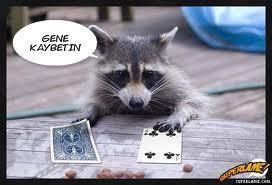
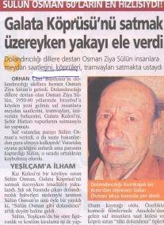

Ülkemizde en sık rastlanılan dolandırıcılık yöntemleri şunlardır: a. Gerçek dışı belge düzenleyerek
Sahte nüfus cüzdanı düzenleyerek,
Kimlik üzerinde fotoğraf değiştirerek,
Sahte sürücü belgesi düzenleyerek,
Sahte araç ruhsatı düzenleyerek,
Sahte kimlikle şirket kurarak,
Sahte kargo belgesi düzenleyerek,
Sahte kimlik ile sahte vekâlet düzenleyerek,
Takoğraf cihazlarından çalınan sürücü belgeleri üzerinde fotoğraf değiştirip araç kiralayarak,
Sahte basın kartı düzenleyerek,
Sahte pasaport düzenleyerek,
20
Sahte asker ve polis kimliği düzenleyerek,
Başkasının kimlik bilgilerini kullanıp kredi kartı çıkartarak, b. Yanlış adrese yönlendirerek
Sipariş verip farklı adrese yönlendirerek,
c. Değeri düşük döviz kullanarak
Yabancı ülkelere ait değeri düşük paraları değerli gibi gösterip Türk parasına çevirmeye çalışarak,
Değeri düşük parayı değerli gibi gösterip para bozdurarak,
Değeri düşük parayı değerli gibi gösterip para üzeri alarak, d. Memur süsü vererek, unvan kullanarak
Kendisini gümrük görevlisi olarak tanıtıp gümrükten düşük ücretli mal çekme vaadiyle güven kazandığı şahıslardan para toplayarak,
Banka görevlisi gibi tanıtarak,
PTT Bank görevlisi gibi tanıtarak,
Vali veya Kaymakam gibi tanıtıp yardım toplayarak,
Sağlık görevlisi veya doktor gibi tanıtarak,
Cumhuriyet Savcısı, Polis, Asker gibi tanıtarak,
TEDAŞ görevlisi gibi tanıtarak, (kaçak elektrik bahanesi ile para talep edilmesi)
Vergi memuru gibi tanıtarak,
e. Bilgisayar üzerinden satış yaparak
İnternet üzerinden bir ürünü satıyormuş gibi göstererek,
İnternette tanıştığı şahıslara kendisini avukat olarak tanıtıp ucuz araç satışı yaparak, 21
f. İletişim cihazları kullanılarak
Para/Kontör isteyerek,
Telefon veya hesap numaralarına para veya para/kontör yükleterek,
Firmaların düzenlediği kampanyalardan ödül kazandığı bahanesiyle para/kontör yükleterek,
g. İsim kullanarak
Hızır Peygamber gibi tanıtarak,
Tanıdık olduğu bahanesi ile şahısları tanıyor gibi yapıp ikna ederek, (örnek: patronunun, babasının, kardeşinin, vs. borçları olduğu şeklinde kandırarak paralarının alınması)
Tamire bırakılan eşyaları alarak,
PTT Bank veya bankaya gelen havaleleri alarak,
h. Bir malı gerçeğine benzeterek
Altın görünümlü eşyayı satarak, (saat, çakmak)
Kıymetli taş veya maden izlenimi verip satış yaparak,
Paket içerisinde eşyanın sadece dış kabının göstererek, i. Çekiliş yaptırarak
Hediye çekilişi bahanesi ile satış yaparak,
j. Değersiz veya geçersiz para kullanarak
Türk parasını tanıma bahanesiyle,
Değeri az ülke parasını değerli gibi göstererek,
Para serisi koleksiyonu yapıyorum bahanesiyle,
k. Gayrimenkul Dolandırıcılığı
İpotek karşılığı nakit verme vaadi ile harç ve masraf gösterilmesi,
Aynı isimli şahıs adına düzenlenen vekâletname ile arsa satışı yapılması, 22
Hizmet satışı vaat edilmesi, (tatil, kaplıca, devre mülk)
Gayrimenkul satılması veya kiralanması,
l. Oto Dolandırıcılığı
Noterden satış işlemi yapılmış aracın ödemesinin yapılmaması,
Aracın satın alınmadan önce kontrol ettirme bahanesi ile götürülmesi,
Araç ücretinin hesaba havale yapılacağının vaat edilmesi,
İnternet üzerinden araç satışı ile ilgili kapora alınması, m. ATM dolandırıcılığı
Güven kazanılarak kart şifresinin öğrenilmesi,
Kartın ATM cihazında kaldığı izlenimi verilmesi,
Yardım etme bahanesi,
Paranın eksik verildiğinin iddia edilmesi,
Kart sıkıştırılması,
Kartın ATM de kaldığı bahane edilmesi,
n. Kredi kartı dolandırıcılığı
Başkası adına kredi kartı çıkartarak,
Başkasının kredi kartı ile alışveriş yaparak,
Alınan mal veya hizmetin bedelinden fazlasını çekerek,
o. Define, tarihi eser ve gömü bulunması vaadiyle
Tarihi eser görünümündeki imitasyon malzeme ve eşyaların gömülerek yeni bulunuyormuş izlenimi verilmesi,
Kişinin, asker arkadaşı tarafından herhangi bir yerde gömü olduğuna ikna edilmesi,
Tarihi eserlerin bulunabilmesi için yapılacak harcamaların karşılanmasının talep edilmesi,
p. Evlendirmek, evlenmek veya ilişkiye girmek vaadiyle
Para, ziynet eşyası, gayrimenkul talep edilerek,
Kartsız işlemle para transferinin yapılması,
23

q. İyilik yapma vaadiyle
Yaşlılara yardım etme bahanesiyle,
r. İş bulma vaadiyle
Yurtdışına işçi olarak götürmek bahanesiyle,
İşe yerleştirme bahanesiyle,
s. Para üstü alma bahanesiyle
Para vermeden para üstü alarak,
Para bozdurma veya tümleme bahanesi
t. Fala bakma, büyü bozma ve muska yazma bahanesiyle
Büyü bozma, muska yazma bahanesi ile ziynet eşyası, para gibi değerli eşyaların alınmasıdır.
Mağdurların evlerine gidilerek bayanlara gelecekten haber verme, büyü bozma bahanesi ile ziynet eşyaları bir mendile sarılıp, el çabukluğu ile mendilin değiştirilip, fal bozulmasın diye "bu mendili daha sonra aç" denilerek ziynet eşyalarının çalınması şeklinde meydana gelmektedir.
u. Üçkâğıtçılık
Halk dilinde "bul karayı, al parayı" diye tabir edilen, üç tane iskambil kâğıdı ile oynanan, kâğıdın çok iyi saklanıp kişilerin kandırılarak paralarının alınmasıdır.
v. Tombalacılık
Sigara veya kıymette değersiz eşyaları kazandırmak bahanesi ile bir torba içerisine koyulan numaralarla çekiliş yaptırılıp kişilerin kandırılarak paralarının alınmasıdır. Kartlarda bulunan numaralar genelde torbada bulunmaz ya da çift gözlü torba kullanılır.
24

y. Zarfçılık (Mendilcilik)
İçi kâğıtla doldurulmuş zarf veya mendile para ile yüklü görünümü verilerek, mağdura “para buldum paylaşalım” denilip, mağduru kalabalıktan uzak bir yere götürüp, ikinci bir şahıs yardımıyla mağdurun üzerindeki para ve değerli eşyaların alınmasıdır.
z. Çek ve senet dolandırıcılığı
Çalıntı veya buluntu çek ile dolandırıcılık genellikle tatil günlerinde mal karşılığı verilmek suretiyle gerçekleştirilir. Tatil gününde olmasının amacı bankaların çalışmamasıdır. Senetle yapılan dolandırıcılık ise senet üzerinde bildirilen adresin hayali olmasıdır.